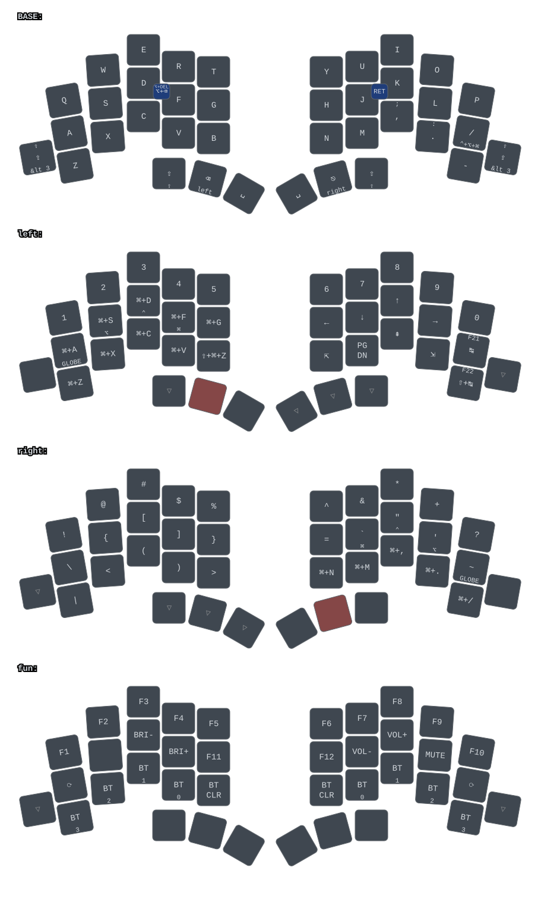

Keymap
This page is the one hand-written layer and thumb reference. Source of truth
is config/totem.keymap;
if this page and the keymap disagree, the keymap wins. The diagram below is
generated from the keymap by keymap-drawer on every docs deploy.

Key positions
Positions are the flat indices ZMK uses in key-positions and
hold-trigger-key-positions.
0 1 2 3 4 5 6 7 8 9
10 11 12 13 14 15 16 17 18 19
20 21 22 23 24 25 26 27 28 29 30 31
32 33 34 35 36 37
38 positions total: 10 on row 0, 10 on row 1, 12 on row 2, 6 thumbs on row 3.
The flanking pinkies 20 and 31 sit on the row-2 line of the diagram but are
wired on electrical row 3 (RC(3,0) and RC(3,9) in the matrix transform).
Thumbs, left to right: 32 left outer, 33 left middle, 34 left inner, 35 right inner, 36 right middle, 37 right outer.
Layers
| # | Node | Name | How to reach | Contents |
|---|---|---|---|---|
| 0 | base |
BASE | default | QWERTY alphas; / on 19 (hold: Ctrl+Alt+Cmd); - on 30; hold FUN, tap caps word on 20 and 31 |
| 1 | left |
NAV | hold left middle thumb (33) | Numbers, arrows, Home/PgDn/PgUp/End, Cmd+letter shortcuts, cmd_tab/cmd_stb |
| 2 | right |
SYM | hold right middle thumb (36) | Shifted symbols, braces and brackets, pipe, angle brackets, parens, ?; Cmd+letter on the bottom right |
| 3 | fun |
FUN | hold either outer pinky (20 or 31) | F1 to F12, brightness, volume, mute, output toggle, BT select 0 to 3 (mirrored), BT clear |
FUN in detail:
F1 F2 F3 F4 F5 F6 F7 F8 F9 F10
out . bri- bri+ F11 F12 vol- vol+ mute out
held BT3 BT2 BT1 BT0 BTclr BTclr BT0 BT1 BT2 BT3 held
out is &out OUT_TOG (USB / BLE output).
Thumb keys
| Layer | 32 L outer | 33 L middle | 34 L inner | 35 R inner | 36 R middle | 37 R outer |
|---|---|---|---|---|---|---|
| BASE | sticky Shift | hold NAV, tap Backspace | Space | Space | hold SYM, tap Esc | sticky Shift |
| NAV | sticky Shift | (held) | none | Space | hold SYM, tap Esc | sticky Shift |
| SYM | sticky Shift | hold NAV, tap Backspace | Space | none | (held) | none |
| FUN | none | none | none | none | none | none |
Bindings behind the BASE thumbs:
- 32, 37:
&sk LEFT_SHIFT,&sk RIGHT_SHIFT. - 20, 31 (outer pinkies):
<_caps 3 0. Hold is< 3, tap is&caps(caps word; with Shift held, Caps Lock). - 33:
&sk_mo 1 BACKSPACE. Hold is&mo 1, tap is&sk BACKSPACE. - 36:
< 2 ESCAPE.
Cells marked "(held)" or inherited from BASE are &trans in the keymap.
Combos
| Name | Positions | Base keys | Layer | Action |
|---|---|---|---|---|
enter |
16 17 | J K | BASE | Enter |
bs_df |
12 13 | D F | BASE | &bwd_dwd: Alt+Backspace, with Shift Alt+Delete |
Macros
Seven macros are defined in config/totem.keymap (leq, geq, left_arrow,
right_arrow, colon_equals, yank_inner_word, yank_line) but none is
bound to a key or a combo right now. The NAV combos that used to fire
yank_line (15 18) and yank_inner_word (16 17), and the BASE bwd combo on
11 12 13, were removed.
Stale keymap comment
The ASCII diagram in the comment above base in config/totem.keymap is
stale (QWERTZ letters, old thumb labels). Trust the bindings, not the comment.